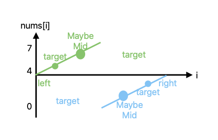

二分法是数据结构里最大的骗子，以为很简单，但是边界条件总写错，就很愤怒！
看看别人怎么写的，五花八门的，我就很不理解。今天为了战胜二分法，我把想法记在这里，希望能帮到正在看文章的你。总之，写二分出错是日常，把能做对的做对就很赞。
给个有序数列和 target，计算 mid。target 比 mid 大，就去右边找，比 mid 小，就去左边找，循环直到 mid 上的值==target。
left-----(target)-------mid-------(target)-----right
看了一下各种的二分代码，我发现使人迷惑的原因是：while 里的跳出条件、left/right 的更新条件很多种。我觉得大概率有以下 4 个步骤，2 和 4 大概率是确定的。1 和 3 总是不确定的，但好在 1 和 3 是有关系的（如果看不懂，可以看下面的表格再回来看这里）：
left=0 和 right=N-1，计算 mid = left + (right - left) / 2;（注意 1. mid 不要溢出，2. 不同语言的除法可能不一样，这里需要向下取整）控制边界条件，就是在即将跳出循环时考虑：怎么知道能不能跳出、怎么才能跳出。为了避免脑子变成浆糊，前面的循环先不想，只考虑最后一次。
根据 1 的跳出条件，比如以下三种：
left < right
left <= right
left + 1 < right
想象一下，最后一次循环的时候，每个变量是啥样的，以及需要做什么：
| 当跳出条件是 | 最后一次循环时，left/right 是什么样子 | mid 是哪个值 | 怎么做能够跳出循环 | 按左边的做法做了，结果是啥样 |
|---|---|---|---|---|
left < right |
[A1,...An,left,right,B1,...,BN] | left | left = mid + 1 or right = mid；也有可能 left = mid or right = mid - 1，看具体情况，总之 left 和 right 同时只挪一个 |
[...,left(==right),...] |
left <= right |
[A1,...An,left(==right),B1,...,BN] | left(right) | left = mid + 1 or right = mid - 1 |
[...,right,left,...] |
left + 1 < right |
[A1,...An,left,X,right,B1,...,BN] | X | left = mid + 1 or right = mid - 1 |
[...,left,right,...] |
这三种条件各有千秋：
1 的好处是：最后结果只有一个，也就是 left==right，后处理的时候就可能写得更简单，这个写法感觉用到最多。
2 的好处是： left 和 right 最后完全反向，可能需要判断的时候用，我没太用到过。
3 的好处是： 只更新 mid 给left/right就行，不用考虑mid+1 mid-1 之类的
另外还有这个方法https://www.youtube.com/watch?v=JuDAqNyTG4g通过红蓝区域找边界，类似于第三种 left +1 < right，也挺好理解，但是初始条件从 left = -1 和 right = N 开始。但是感觉 isBlue 不是很容易套用，能遇到的话挺好的，不过像 leetcode34 这种就挺完美适配的。
初始条件有的会设置为：left = 0 和 right = nums.size()，right 指向数组的外面，空出来一个位置。这个时候循环条件通常是 left < right。
涉及大数运算之类的时候，可能需要用 long 之类的
下面记录的题，大多数都是 easy 的，但是也很难一次做对，不过没关系。拿https://leetcode.com/tag/binary-search/ 这个列表里的题试一下，就算做错了，理解别人的想法也没问题了吧。
例如[4,5,6,7,0,1,2] 这种被弯折过的数组，找到对应的 num，如果没有返回-1。要求 logn 时间。
这个题说难也简单。他把升序数组扭了一下。那我们不管他，我们想象一个坐标系，横轴是下标i，纵轴是nums[i]，把这个数组想成两个升序的数组。

一个做法是先找骤降的边界（找到最小值min），然后从[min,right]或者[left,max]里面常规二分。
还有一个做法是让 target 落到完全上升的区间。
left + 1 < right[left,mid]闭区间内，right=mid。left = mid[mid,right]闭区间内，left = midright = mid虽然这里用了left + 1 < right的条件，也过了。但是这个题的结果可能找到也可能找不到（返回-1），所以和计算插入点的题是一样的，用 left < right 的条件比较好，试了一下也过了。
在有序数列中，找到第一个和最后一个出现的位置，要求 logn 时间复杂度。可以用 isBlue 的思路做。
<n时候的 r，如果没找到，直接返回-1这个是比较基础的二分，在升序数组中（没有重复数据）找插入点，注意后处理的条件。这个题需要找到插入点的位置，所以用 left < right 这个条件最好，因为后处理的时候只要和比较 left（right 和 left 最后会一样）就可以了。其他两个条件需要更多比较。
这个题是求非负数的平方根，结果向下取整。其实也是个二分，平方根肯定在 0 到 x/2 中。根据二分跳出条件，用 left< right 的条件会更简单些，取 left 或 left-1。
需要注意：1. 如果 x 很大，可能涉及到大数乘法，注意不要溢出
给一个数组 nums，长度 n，由 0 ～ n 个不重复数字组成，找出缺的数字。
一、用二分的思路：
这个题感觉用 sum-accumulate 或者异或都比二分更天然。但是时间复杂度差点。
给一个[1, 2, ..., n]的数组，里面有个值是 bad，并且导致后面的值都是 bad，是否 bad 用 isBadVersion 来知道。
这个可以用 isBlue 的那个思路去做。https://www.youtube.com/watch?v=JuDAqNyTG4g
left = 0, right = n 这里要避免溢出问题。
和 69 类似
猜大小，有个 API 告诉你高了还是低了，这个就是典型二分。
这个题有点像 222，有 k 行，第 i 行有 i 个 coin，一共 n 个 coin，算能装满多少行
其实就是 的结果正好<=n，而且 正好大于 N
这个题注意 mid 值计算累计值的时候需要用 long